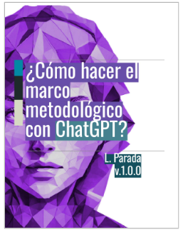
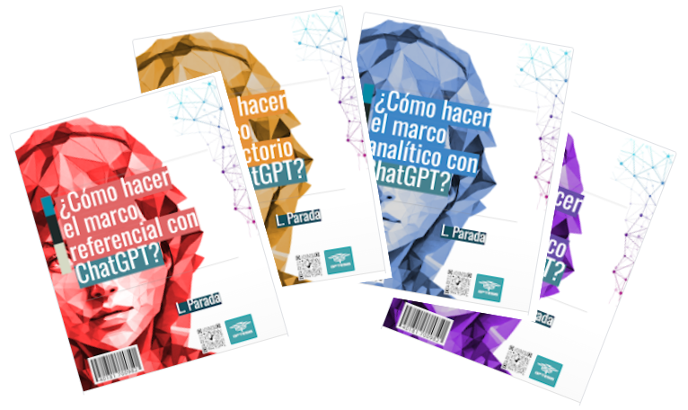

¿Cansado de meses interminables de investigación y frustración sin poder terminar tu tesis?
Entendemos perfectamente tu situación. Desarrollar una tesis puede ser un desafío abrumador, especialmente cuando es la primera vez que te enfrentas a un trabajo de investigación de esta magnitud. La falta de experiencia práctica puede convertir cada paso en un proceso de aprendizaje difícil y lento, ya que te encuentras construyendo no solo tu investigación, sino también tu conocimiento sobre cómo hacer una tesis.
La realidad es que una tesis está compuesta por múltiples partes y componentes, cada uno de los cuales requiere un enfoque específico y estratégico. Desde el 📁 Marco Introductorio hasta el 📁 Marco Analítico, cada etapa demanda un nivel de habilidad y comprensión que puede ser difícil de dominar cuando estás aprendiendo sobre la marcha.
Este desafío de aprender mientras avanzas con tu tesis puede generar una disonancia significativa en la eficiencia del proceso. Intentar obtener resultados mientras simultáneamente te enfrentas a la curva de aprendizaje de cómo hacer una tesis puede llevar a meses interminables de frustración y estancamiento.
Simplifica tu proceso de investigación y tesis con nuestra serie de libros especializados en el uso de ChatGPT y la estructura de la tesis.
Ebook: '¿Como hacer el Marco Referencial?'
75 páginas
Precio: U$17
Ebook: '¿Como hacer el Marco Introductorio?'
38 páginas
Precio: U$11
Ebook: "¿Como hacer el Marco Analítico?"
25 páginas
Precio: U$7
Ebook: '¿Como hacer el Marco Metodológico?'
50 páginas

Precio: U$13
Pack 4 Ebooks
188 páginas

Precio: U$48
Precio OFERTA: U$27
Nuestra serie de libros está diseñada precisamente para proporcionarte la guía práctica que necesitas para superar estos obstáculos. Con nuestros recursos, podrás abordar cada parte de tu tesis con confianza y eficiencia, reduciendo así el tiempo y esfuerzo necesarios para completar tu trabajo. Además, nuestros libros incorporan una amplia variedad de prompts para usar con ChatGPT y otros motores de procesamiento de texto basados en Inteligencia Artificial, lo que te permitirá obtener ideas y sugerencias de manera rápida y efectiva para cada sección de tu tesis. Estos prompts te ayudarán a superar bloqueos creativos y a avanzar con fluidez en tu proceso de investigación y redacción.
"Imagina haber tenido una guía paso a paso de apoyo desde el comienzo del proceso de investigación científica..."
Esta serie de ebooks es exactamente eso, un aliado incondicional que te libera de las trabas del desconocimiento y te permite concentrarte en lo que realmente importa: tu investigación. No dejes que la falta de dirección detenga tu búsqueda del éxito académico. Con nuestros libros, por fin tendrás a tu disposición una guía experta para alcanzar tus objetivos y llevar a cabo tu tesis con total confianza y éxito.
¡No pierdas más tiempo!
Únete a cientos de tesistas e investigadores que han transformado su viaje académico con nuestra serie de 4 libros. Rompe el ciclo de demoras y frustración. ¡Haz clic abajo y comienza tu viaje hacia una tesis exitosa ahora mismo!
Descarga ahora nuestra plantilla gratuita
¿Listo para dar el primer paso hacia el éxito en tu proyecto de investigación? ¡Estamos aquí para ayudarte! Con nuestra plantilla gratuita, recibirás un documento editable que te permitirá integrar rápidamente cada componente esencial de tu tesis o investigación científica. Esta plantilla está diseñada específicamente para facilitar el proceso de desarrollo de tu trabajo, proporcionándote la estructura necesaria para el 📁 Marco Introductorio, 📁 Marco Referencial, 📁 Marco Metodológico y 📁 Marco Analítico.
No más tiempo perdido tratando de crear una estructura desde cero o navegando por complejas convenciones de formato. Nuestra plantilla te brindará la guía necesaria para avanzar con confianza en cada etapa de tu tesis o investigación.
Solo necesitas ingresar tu correo electrónico a continuación, y te enviaremos el enlace de descarga de inmediato. ¡No te pierdas esta oportunidad de simplificar tu proceso y aumentar tu productividad, comienza a dar forma a tu proyecto de investigación de manera profesional y efectiva!
¡Descarga ahora y lleva tu investigación al siguiente nivel! ¡Gracias por confiar en nosotros para hacer que tu trabajo académico brille!